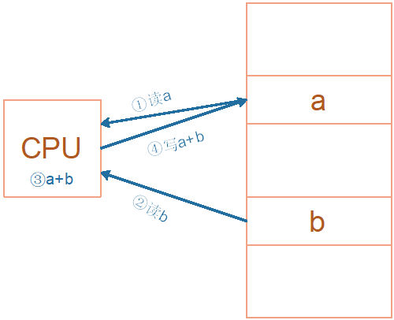
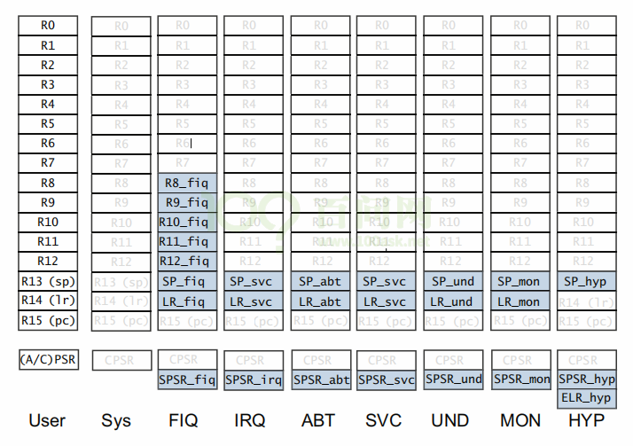

一、 ARM处理器程序运行的过程
ARM芯片属于精简指令集计算机(RISC：Reduced Instruction Set Computing)，它所用的指令比较简单，有如下特点：
① 对内存只有读、写指令
② 对于数据的运算是在CPU内部实现
③ 使用RISC指令的CPU复杂度小一点，易于设计
比如对于a=a+b这样的算式，需要经过下面4个步骤才可以实现：
细看这几个步骤，有些疑问：
① 读a，那么a的值读出来后保存在CPU里面哪里？
② 读b，那么b的值读出来后保存在CPU里面哪里？
③ a+b的结果又保存在哪里？
我们需要深入ARM处理器的内部。简单概括如下，我们先忽略各种CPU模式(系统模式、用户模式等等)。

CPU运行时，先去取得指令，再执行指令：
① 把内存a的值读入CPU寄存器R0
② 把内存b的值读入CPU寄存器R1
③ 把R0、R1累加，存入R0
③ 把R0的值写入内存a
现在，我们知道了：CPU内部有很多寄存器，CPU要从外部设备上读入指令，执行指令。
二、 ARM架构的简单介绍
IMX6UL使用Cortex-A7架构，本小节简单介绍一下Cortex-A7架构的基础知识，比如运行模式、寄存器组等。
参考资料：
Ÿ 文件名：ARMv7编程手册(DEN0013D_cortex_a_series_PG).pdf
Ÿ 文档所在目录: 网盘开发板配套资料“ 08_Reference material (ARM,NXP参考资料)/Arm架构参考资料.zip”
Ÿ 参考章节: 《3: ARM Processor Modes and Registers》
2.1 地址空间_RISC与CISI（补充）
对于ARM架构，访问内存还是访问外设或者外设的寄存器，都没有任何区别，因为ARM的地址范围都属于同一地址空间，这是ARM所特殊的地方。ARM有一个内存控制器，CPU发出的地址经过内存控制器，通过不同的地址来访问不同的内存或者外设。
假设外设中有一个EMMC controller，外接一个Flash，CPU发出的地址可以到达外设，但是不能到达Flash，想访问Flash必须通过EMMC控制器，这个类似于爷父子三级关系，不能跨级访问，CPU和EMMC所看到的零地址不是同一个东西。

以x86架构来进行对比，内存空间和IO空间完全两回事，使用不同的指令来访问内存，两个地址不在同一个空间，

2.1.1 RISC
ARM芯片属于精简指令集计算机(RISC：Reduced Instruction Set Computing)，它所用的指令比较简单，有如下特点：
① 对内存只有读、写指令
② 对于数据的运算是在CPU内部实现
③ 使用RISC指令的CPU复杂度小一点，易于设计

2.1.2 CISC
x86属于复杂指令集计算机(CISC：Complex Instruction Set Computing)，
它所用的指令比较复杂，比如某些复杂的指令，它是通过“微程序”来实现的。
比如执行乘法指令时，实际上会去执行一个“微程序”，
在“微程序”里，
一样是去执行这4不操作：
① 读内存a
② 读内存b
③ 计算a*b
④ 把结果写入内存

2.1.3CISC和RISC比较
1.指令能力：CISC的指令能力强，单多数指令使用率低却增加了CPU的复杂度，指令是可变长格式；RISC的指令大部分为单周期指令，指令长度固定。RISC对内存只有load/stoe操作，数据的运算都是在CPU内部实现。
2.寻址方式：CISC支持多种寻址方式；RISC支持的寻址方式少；
3.实现方式：CISC通过微程序控制技术实现；RISC增加了通用寄存器，硬布线逻辑控制为主，采用流水线方式执行。
4.研发周期：CISC的研制周期长，RISC硬件简单，需要优化编译器，有效支持高级语言
2.2 9种运行模式
Cortex-A7架构的运行模式有9种，分别为User、Sys(System)、FIQ、IRQ、ABT(Abort)、SVC(Supervisor)、UND(Undef)、MON(Monitor)、Hyp模式，如下表：
模式 | 描述 |
User | 用户模式，非特权模式，大部分程序运行的时候就处于此模式 |
Sys(System) | 系统模式，用于运行特权级的操作系统任务 |
FIQ | 快速中断模式，进入 FIQ 中断异常 |
IRQ | 一般中断模式 |
ABT(Abort) | 数据访问终止模式，用于虚拟存储以及存储保护 |
SVC(Supervisor) | 超级管理员模式，供操作系统使用 |
UND(Undef) | 未定义指令终止模式 |
MON(Monitor) | 用于安全扩展模式 |
Hyp | 用于虚拟化扩展 |
除了User模式属于非特权模式，其它8种处理器模式都是特权模式。
运行模式可以通过软件进行任意切换，也可以通过中断或者异常来进行切换。大多数的程序都运行在用户模式，用户模式下是不能访问系统所有资源的，有些资源是受限的，要想访问这些受限的资源就必须进行模式切换。但是用户模式是不能直接进行切换的，用户模式下需要借助异常来完成模式切换，当要切换模式的时候，应用程序可以产生异常，在异常的处理过程中完成处理器模式切换。
所谓“运行模式”，可以这样简单理解：
① 板子上电时，CPU处于SVC模式，它用的是SVC模式下的寄存器
② 程序运行时发生了中断，CPU进入IRQ模式，它用的IRQ模式下的寄存器
③ CPU处理完中断，它切换回SVC模式，继续使用SVC模式下的寄存器
④ CPU发生某种异常时，比如读取内存出错，它会进入ABT模式，使用ABT模式下的寄存器来处理错误。
在某种模式下，CPU执行时使用的是这种模式的资源，比如使用的是这组模式的寄存器。
这样就可以免去保存上一个模式所使用的寄存器。
三、 寄存器组介绍：M3、M4与A7
无论cortex-M3/M4还是现在学习的A7，内部都有R0-R15这15个寄存器来“暂存”数据
这些是内核寄存器组，而不是类似GPIO寄存器等的芯片外设寄存器，这些寄存器CPU可以直接访问到。


sp_main：主栈寄存器
3.1 程序状态寄存器：APSR/IPSR/EPSR
（PSR全称：Program Status Register）
M3/M4的xPSR 实际上对应3个寄存器APSR/IPSR/EPSR
（三个寄存器的位是错开的，所以组合在一起，叫做xPSR）

MRS表示：Move to Register from Status，就是把Status寄存器的值移动到通用寄存器
（
MOV R1 R0的结果是：R1的值等于R0的值，后面的R0是源，前面的R1是目的；以此方便理解
)
3.2 程序状态寄存器：CPSR
对于cortex A7的CPSR 寄存器

3.3 M3/4与A7的程序状态寄存器对比

Cortex-A7 内核寄存器组，
上一小节我们讲了 Cortex-A7 有 9 种运行模式，每一种运行模式都有一组与之对应的寄存器组，如下图：
浅色字体是与 User 模式所共有的寄存器，浅蓝色背景是各个模式所独有的寄存器，即在所有的模式中，低寄存器组(R0~R7)是共享同一组物理寄存器的，只是一些高寄存器组在不同的模式有自己独有的寄存器，比如 FIQ 模式下 R8~R14 是独立的物理寄存器。不同运行模式不同的寄存器有助于提高运行速度。
如果某个程序处于 FIQ 模式下访问寄存器 R13(SP)，那它实际访问的是寄存器 SP_fiq
如果某个程序处于 SVC 模式下访问寄存器 R13(SP)，那它实际访问的是寄存器 SP_svc
3.4 4类寄存器介绍（对于ARMA7）
9 种运行模式的寄存器合计有34个，可以分为：
1. 未备份寄存器，即 R0~R7
2. 备份寄存器，即 R8~R14
3. 程序计数器 ，即 R15
4. 程序状态寄存器
① 未备份寄存器
未备份寄存器指的是 R0~R7，因为在所有的运行模式下R0~R7寄存器都是同一个物理寄存器，在不同的模式下，R0~R7寄存器中的数据就会被破坏，所以R0~R7寄存器并没有被用作特殊用途。
② 备份寄存器
备份寄存器中的 R8~R12 寄存器有两种物理寄存器，在快速中断模式下(FIQ)它们对应着Rx_irq(x=8~12)物理寄存器，其他模式下对应着 Rx(8~12)物理寄存器。FIQ 是快速中断模式，这个中断模式要求快速执行！因为 FIQ 模式下的 R8~R12 是独立的，因此中断处理程序可以不用保存和恢复R8~R12，从而加速中断的执行过程。
备份寄存器 R13(SP) ，也叫栈指针，有 8 个物理寄存器，其中一个是User和Sys模式共用的，剩下的 7 个分别对应 7 种不同的模式。
备份寄存器 R14(LR) ，也叫链接寄存器，有 7 个物理寄存器，其中一个是User、Sys和Hyp模式所共有的，剩下的 6 个分别对应 6 种不同的模式，主要有如下用途：
使用 R14(LR)来存放当前子程序的返回地址，如果使用 BL 或者 BLX来调用子函数的话，R14(LR)被设置成该子函数的返回地址，在子函数中，将 R14(LR)中的值赋给 R15(PC)即可完成子函数返回，如mov pc,lr

③ 程序计数器
程序计数器 R15(PC)，保存着当前执行指令地址值加 8 个字节
因为ARM处理器是三级流水线：取指->译码->执行，循环执行。比如当前正在执行第一条指令的同时也对第二条指令进行译码，第三条指令也同时被取出存放在 R15(PC)中，即 R15(PC)总是指向当前正在执行指令地址再加上 2 条指令的地址，对于 32 位的 ARM 处理器，每条指令是 4 个字节，
所以R15(PC) = 当前执行指令地址 + 8个字节
④ 程序状态寄存器
程序状态寄存器PSR可以分成当前程序状态寄存器CPSR与备份程序状态寄存器SPSR。
所有运行模式都共用一个 CPSR 物理寄存器，因此 CPSR 可以在任何模式下被访问，该寄存器包含条件标志位、中断禁止位、当前运行模式标志等一些状态位以及一些控制位。但是所有运行模式都共用一个 CPSR 必然会导致冲突，因此除了 User 和 Sys 模式以外，其他 7 个模式都配备一个专用的物理状态寄存器，叫做 备份程序状态寄存器(SPSR)，当特定异常中断发生时，SPSR用来保存CPSR的值，当异常退出以后可以用 SPSR 中保存的值来恢复 CPSR。
由于 SPSR 是 CPSR 的备份，因此 SPSR 和 CPSR 的寄存器结构相同，如下图：

N(bit31)：当两个有符号整数运算(补码表示)时，结果用N表示，N=1/0 表示 负数/正数
Z(bit30)：对于 CMP 指令，Z=1 表示进行比较的两个数大小相等
C(bit29)：
在加法指令中，当结果产生了进位，则C=1，表示无符号数运算发生上溢，其它情况下 C=0
在减法指令中，当运算中发生借位，则C=0，表示无符号数运算发生下溢，其它情况下 C=1
对于包含移位操作的非加/减法运算指令，C 中包含最后一次溢出的位的数值
对于其它非加/减运算指令，C 位的值通常不受影响
V(bit28)：对于加/减法运算指令，当操作数和运算结果表示为二进制的补码表示的带符号数时，V=1 表示符号位溢出，通常其他位不影响 V 位
Q(bit27)：仅 ARM v5TE_J 架构支持，表示饱和 状态，Q=1/0 表示累积饱和/累积不饱和
IT[1:0](bit26:25) 和 IT[7:2](bit15:bit10)一起组成 IT[7:0]，作为 IF-THEN 指令执行状态
J(bit24)和T(bit5)：控制指令执行状态，表明本指令是ARM指令还是Thumb指令，如表
J | T | 描述 |
0 | 0 | ARM |
0 | 1 | Thumb |
1 | 1 | ThumbEE |
1 | 0 | Jazelle |
GE[3:0](bit19:16)：SIMD 指令有效，大于或等于
E(bit9)：大小端控制位，E=1/0 表示大/小端模式
A(bit8)：禁止异步中断位，A=1 表示禁止异步中断
I(bit7)：I=1/0 代表 禁止/使能 IRQ
F(bit6)：F=1/0 代表 禁止/使能 FIQ
M[4:0]：运行模式控制位，如表
M[4:0] | 运行模式 |
10000 | User 模式 |
10001 | FIQ 模式 |
10010 | IRQ 模式 |
10011 | Supervisor(SVC)模式 |
10110 | Monitor(MON)模式 |
10111 | Abort(ABT)模式 |
11010 | Hyp(HYP)模式 |
11011 | Undef(UND)模式 |
11111 | System(SYS)模式 |
3.5 程序状态寄存器中的位（详细介绍）


3.6 补充
我们说”寄存器”时，需要分辨是哪种：
1.CPU内部的寄存器
2.CPU之外设备自己的寄存器
这是不一样的：
1.CPU通过各类汇编指令访问内部寄存器
2.CPU要访问设备的寄存器时，就像访问内存一样，要先知道地址
举例：
外部寄存器的地址是0x1000,要读它，使用如下汇编指令：
Mov R0,#0x1000 @把外部寄存器地址值赋给CPU内部寄存器r0
Ldr R1,R0
3.7 PC寄存器和LR寄存器的理解与区别
PC本质上是为CPU服务的，解决的问题是"去哪里"。CPU只需要一个目的地, 然后去就好了。
LR本质上是为了给程序员减负。
如果没有LR，当caller想调用calle时，caller就必须定义一个参数return_addr，然后把这个参数传递给callee, 这样callee才能够返回到caller。
但现在有了LR，在硬件层面上就定死了返回地址一定在LR。当caller调用callee时，硬件会自动把返回地址保存到LR, callee也知道它要返回的地址必定在LR。这样程序员就可以任意调用函数，而不必再担心返回地址的问题了。
1. caller调用callee时，PC和LR的关系:
callee的代码执行完后，需要return回caller, 此时的return, 本质上就是 MOV PC, LR
2. CPU正在执行函数A时，
中断X产生了，于是CPU跑去执行中断X的函数, 此时PC和LR的关系： 中断X的代码执行完后，需要return回函数A, 此时的return, 本质上就是 MOV PC, LR
3.8 参考资料
ARM汇编中PC寄存器详解https://www.cnblogs.com/ichunqiu/p/9056630.html